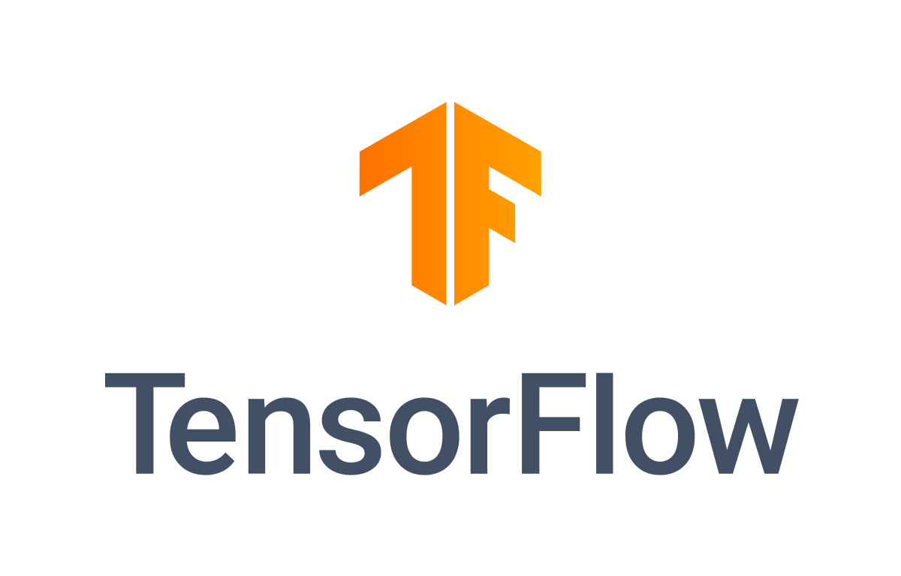
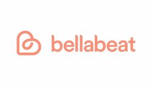

Hi, Welcome to my Projects page!
Here, you'll find a curated selection
of work that reflects my journey in data analysis, business
intelligence, and artificial intelligence. Each project showcases my
ability to turn data into actionable insights, streamline
processes, and support decision-making through clear,
results-driven analysis. Whether it's building dashboards,
conducting exploratory data analysis, or managing cross-functional
initiatives, these projects highlight my commitment to continuous
learning, problem-solving, and delivering value through data.
Research
This research project applies data science techniques to material science, focusing on the analysis and prediction of material properties using Pre-trained models. By leveraging experimental data and computational methods, the project aims to accelerate material discovery, improve performance predictions, and support data-driven innovation in material design.

Image Identification Model From X-Ray Diffractograms Based On VGG16
This project develops an image identification model based on VGG16 to classify materials using X-ray diffractogram data, enabling automated materials identification in material science.
Tools Used : Python, Keras, and Matplotlib
Learn more
Data Analysis
Exploratory analysis and dashboards built with SQL, Tableau and
Power BI on public datasets, turning raw tables into clear
business insights.

Data Analysis with Tableau and SQL
A project about understanding user habit to provide marketing
insights for bellabeat's strategic growth.
Tools Used : SQL & Tableau
Learn more

Dashboards
A collection of interactive Power BI dashboards from real-world projects, showcasing insights across business, sales, user behavior, and trends through practical data visualization and storytelling.
Tools Used : PowerBI & PowerQuery
Learn more

Data Analysis with PowerBI and SQL
An analysis on the performance of Sales at AtliQ Business
Hardware Sales, India.
Tools Used : PowerBI & MySQL
Learn more
Machine Learning / AI
Machine learning and AI projects that solve practical business problems using structured data. My work includes forecasting using models like XGBoost. Each project follows a complete pipeline—from data cleaning and feature engineering to model training, evaluation, and interpretation—often incorporating techniques like time-series decomposition, one-hot encoding, and Fourier transforms. These projects are designed not just for accuracy, but also for business impact and clear, actionable insights.

Kaggle Sales Forecasting XGBoost
Kaggle Sticker Sales Prediction using XGBoost and Radial Basis Function with final RMSE value 0.62
Tools Used : Python, sklearn, XGBoost, sklego
Learn more

Product Name Matching
Maps noisy marketplace listing titles to a canonical product catalogue: rule-based extraction, BM25 and fuzzy similarity combined by rank fusion, with accuracy measured against known ground truth. Built as an exercise on synthetic data.
Tools Used : Python, regex, BM25, fuzzy matching

Larder: Fridge-to-Meal-Plan App
Snap a photo of a fridge or pantry to get an inventory, a 7-day meal plan and a shopping list. Object detection runs on a self-hosted YOLOv8 server and a greedy optimizer picks recipes, so it makes no paid LLM calls.
Tools Used : React, Vite, Tailwind, YOLOv8, Supabase
Applied Analytics & Engineering
Pipelines and applications that move data from a source to a decision-maker: reconciled dashboards and automated reports. The exercises below use synthetic data and fictional companies.

Commercial Analytics Dashboard
Tracks sell-in, sell-out and target by channel: extract, DuckDB SQL aggregation, a FastAPI endpoint and a single-page front end, with tests that reconcile the page against the raw rows.
Tools Used : Python, DuckDB, FastAPI, pytest
Automated Report Pipeline
A scheduled data-to-slides pipeline: refresh stage to a JSON cache, then a PowerPoint deck with native charts, orchestrated with Airflow. A guard refuses to fall back to fake data silently.
Tools Used : Python, python-pptx, Airflow, pytest
Optimization & Operations Research
Mathematical optimization for planning problems in manufacturing and supply chains: linear and mixed-integer models solved with open-source solvers.

Production Planning under Material Scarcity
Chooses production quantities to maximize margin when materials are scarce: an LP relaxation, rounding to minimum production quantities, then a recovery pass that spends leftover material.
Tools Used : Python, LP/MILP, HiGHS, SciPy
Multi-Year Capacity Planning
Decides which product groups run on which lines and when to add machines over several years, using monotonic opening variables and a lexicographic objective: fill demand, then open fewest machines, then open them as late as possible.
Tools Used : Python, MILP, HiGHS, SciPy
Distribution Network Optimization
Minimizes the cost of shipping from factories through distribution centres to customers under capacity limits, with a scenario runner that compares demand growth and capacity options.
Tools Used : Python, network flow LP, scenario analysis